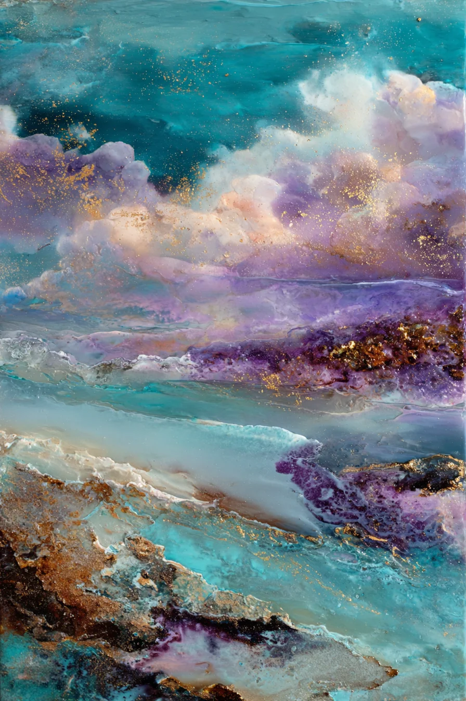

Impasto: Painting with Texture
Impasto is not just a technique. It is a philosophy of presence — the belief that paint should occupy space, catch light, and demand to be touched.
The word comes from the Italian impastare — to knead, to mix. In art, it describes paint applied so thickly that brushstrokes and palette knife marks remain visible, creating a three-dimensional surface.
The Palette Knife
Unlike brushes, which blend and soften, the palette knife sculpts. It pushes heavy-body oil across the surface, leaving ridges, peaks, and valleys. Each stroke is deliberate. Each mark is permanent.
There is no going back with a palette knife. Every movement is a commitment. This permanence gives impasto its emotional weight.
From Canvas to Digital
The challenge of reproducing impasto as a digital print is preserving the dimensionality. A flat scan flattens the texture. A standard photograph captures color but loses depth.
At KayaVox, we use high-end macro optics to photograph each original at 300 DPI. The lens captures every ridge and valley at the millimeter level.

Why Texture Matters
Flat walls create flat experiences. Rooms without texture feel sterile, temporary, like spaces you pass through rather than inhabit.
Texture adds what designers call haptic quality — the sense that a space invites touch, even when you don't actually touch anything.
This is why impasto prints work so well in coastal interiors, Scandinavian minimalism, and quiet luxury environments.
KayaVox
Coastal Light Artist